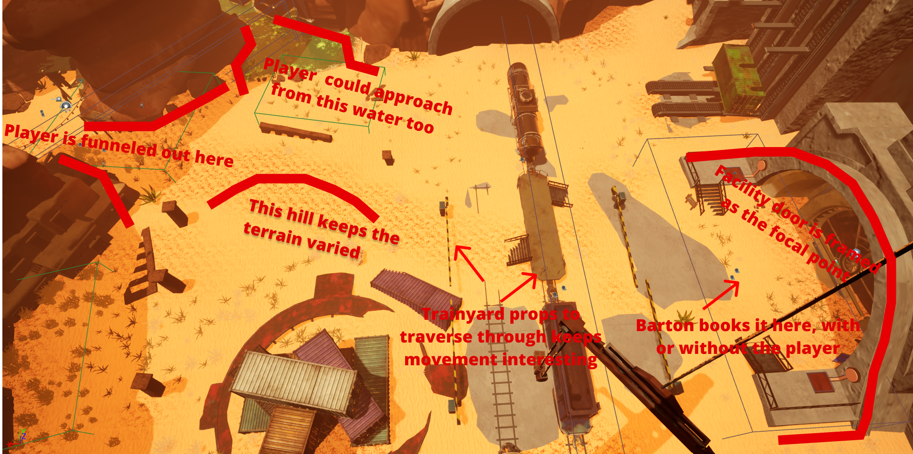
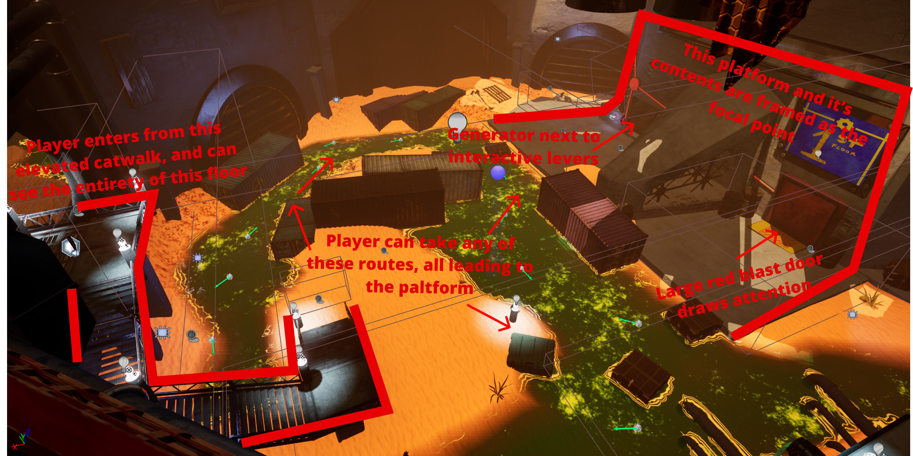
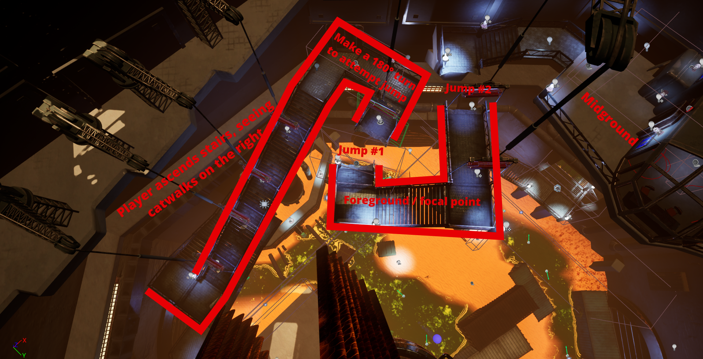

Well howdy! This post is a collection of scene compositions from Barton, a first-person sci-fi puzzle adventure where the player can hold an open dialogue with a companion bot named Barton.
This blog analyzes five scene compositions from environments I created in Barton and explains how each shot supports gameplay readability, pacing, and atmosphere. Let's get into it.
In this composed shot, the player transitions from a barren canyon into a communal bazaar that is now just as abandoned. The player enters from a higher elevation to first read the space as a whole before descending into it.
The rocky outcropping on the right blocks the view of the facility, and serves to wrap and pull the player around, and immerse the player in this tall canyon. A central pillar and rocky columns are framed as the dominant / focal point of this composition, as the surrounding canyons and landscape house this column centrally within it.
The player is drawn down to meet Barton at this rocky pillar, and kickoff their adventure together!
Composition #2: Trainyard & Facility Exterior
After introductions, the player and Barton note this abandoned research facility towering overhead. Approaching from the Bazaar, the facility door is framed by the canyon walls and nearby props as the focal point of this space. Leaving the Bazaar, this space opens up into a wider trainyard that gives the facility a sense of grandeur and prominence.
The distance from the Bazaar to the facility door needed to be compelling to move through, especially because it is a near straight walk to get there. So cresting a small hill, meandering through a railway, and having Barton leave the players side to go right for the door ensures this space that could easily have been an empty straight walk, is instead a simple but compelling jaunt that builds anticipation for what comes next!

Composition #3: The Entry Room
Upon completing the first puzzle with Barton, entry to the facility proper is granted. A large red blast door with two interactable objects aside it is framed as the dominant in this entry room. Using the color red makes the door stand out, while the sandy slope, and adjacent staircase leads the eye upwards to this door.
The lone blue sign is another important element here that also draws immediate attention, and will give the player some context for completing this puzzle, as the player needs to pick up Barton to allow him to reach a lever.
This also gives Barton and the player a new talking point, supporting our primary engagement type of building a connection. This area gives space for mandatory tutorialization, supported through the spatial design, and a meaningful diegetic tutorial sign Barton and the player can interoperate together!
Composition #4: The Silo Floor
After finishing up in the entry room, the player passes through a short drain pipe that serves as a minor pace break and spatial reset. Then, the player enters a large silo, that the remainder of gameplay occurs within.
In playtesting this area, I noted that the majority of players did not look up to see the rocket, and instead focused on the content of the bottom floor, where traversal options and now familiar puzzle mechanics evolve and expand, to keep gameplay interesting and engaging.
Entering the silo from an elevated view shows the player the entirety of the space they will be exploring, giving them an idea of some of the affordances (the ways they can interact with and traverse through this space) present here, before their feet touch the ground of the silo proper.
The opposite side the player enters through contains a platform with a generator, and a locked door, separated by a see-through divider. This platform is the focal point of the space, as all potential pathways lead the player's eye to it.

Composition #5: Catwalk Traversal
As the player ascends along the second floor of the facility, they're faced with two gaps in the approaching catwalks. The player sees these gaps, and then must make a 180° turn to attempt the first jump. This composition shows the player the immediate gap challenge in the foreground, and traversal areas in store later in the background.
This gentle approach to the introduction of a potentially lethal fall makes the danger apparent before the player must face it and allows them to make an informed decision about how to proceed across the gap. Barton also chimes in, requesting the player pick him up to get him across this gap.

Conclusion:
This handful of compositions from Barton explored how we can present and frame important elements of level spaces in ways that give the player enough information to guide their choices, but still maintain them the agency of deciding what to do, and where to go next.
What we want the player to focus on can be framed and crafted in obvious ways, like using a big red door that screams "come unlock me!" Or these methods can be used in subtler ways, like pointing staircases, rock outcroppings, or other props and level geometry to subtly direct the players eye where we want.
It's also important to remember that these compositions don't build themselves perfectly the first time. Each of the shots featured in this post went through countless iterations and changes to improve saliency, guidance, level pacing, and contextualizing with an ai companion throughout. As well as input and direction from environment artists to beautify and populate these spaces, while maintaining their original pacing and level flow.
These practices can give the player the context they'll need to take in and understand the spaces they're exploring, while maintaining the saliency of the interactive experience you're building.